The standard narrative of the 2010s populist wave is that economic anxiety drove voters toward anti-establishment candidates and parties. The data complicates that story considerably. At the U.S. county level, unemployment is the weakest predictor of Republican vote share in 2016 — explaining just 7% of variance — while racial composition and educational attainment explain more than three times as much. The China trade shock and manufacturing collapse have real electoral effects, but the variance decomposition reveals that cultural values and political distrust account for nearly three times more of the populist vote than objective economic measures. This paper moves through four levels of analysis — U.S. counties, cross-national inequality, economic shock channels, and the economic-versus-cultural debate — to map where the data supports the anxiety hypothesis and where it falls short.
The county is the natural unit of analysis for U.S. electoral research: it is small enough to capture meaningful economic heterogeneity, large enough to have reliable administrative data on employment, income, and demographics, and it is the level at which American elections are actually administered. Across approximately 3,100 counties in the 2016 presidential election, the bivariate OLS scatter of county unemployment against Republican vote share tells an initially surprising story: the relationship is negative — higher unemployment counties tended to vote more Republican — but the explanatory power is minimal. Unemployment explains just 7% of the variance in GOP vote share (R² = 0.070).
The stronger predictors are demographic. The share of the adult population without a college degree explains 23.6% of the variance (R² = 0.236) in Republican vote share across counties. Rural population share explains 24.1% (R² = 0.241). White population share explains 28.8% (R² = 0.288) — the single strongest bivariate predictor in the analysis. These results are robust to reordering and hold across election years from 2000 to 2020. They do not mean that economics is irrelevant: low educational attainment is partly an economic outcome, and rural decline is an economic story. But the data is clear that racial and educational composition are more powerful predictors of the 2016 result than the unemployment rate.
The swing analysis — change in GOP vote share from 2012 to 2016 — is more favorable to the economic anxiety hypothesis. Counties in the highest unemployment quartile swung more toward Republicans than counties in the lowest quartile, though the effect is modest. The manufacturing employment decline chart provides the essential macro context: U.S. manufacturing employment peaked at approximately 19.5 million in 1979 and has fallen steadily, with three sharp drops during the 1980–82 recession, the 2001 trade shock, and the 2007–09 financial crisis. By 2025 it sits near 12.9 million — a structural loss of 6.5 million jobs over four decades that concentrates geographically in the Midwest and Southeast.
$i$ indexes counties. Bivariate R² values: Unemployment 0.070 · No College 0.236 · Rural 0.241 · White 0.288. The dominance of demographic over economic predictors is the central finding at the county level.
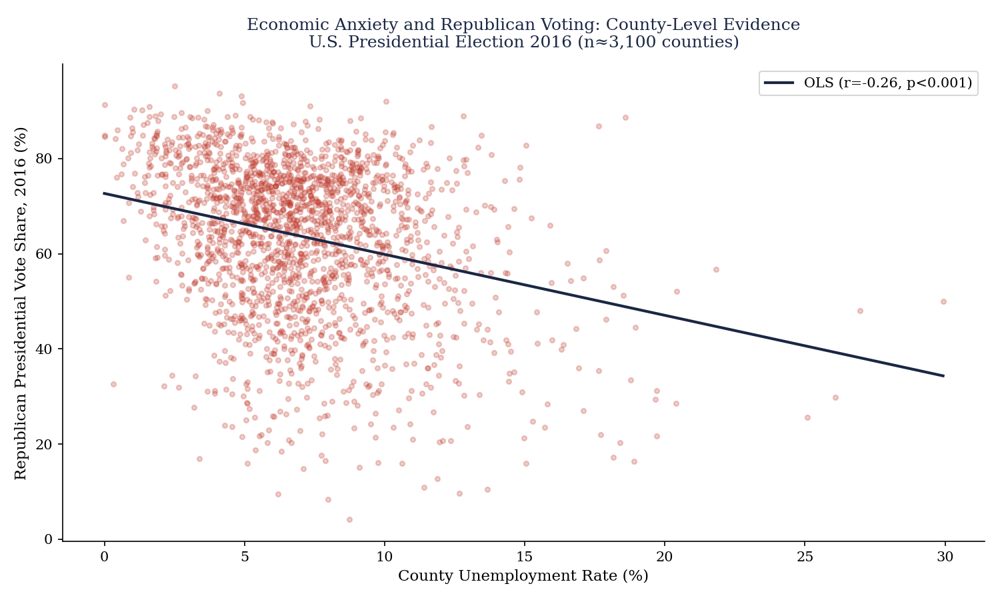
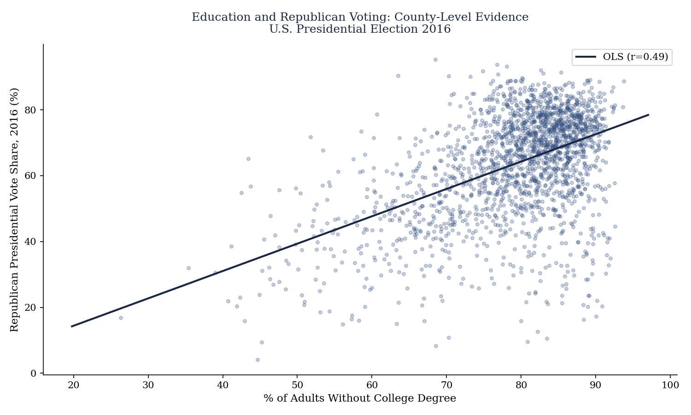
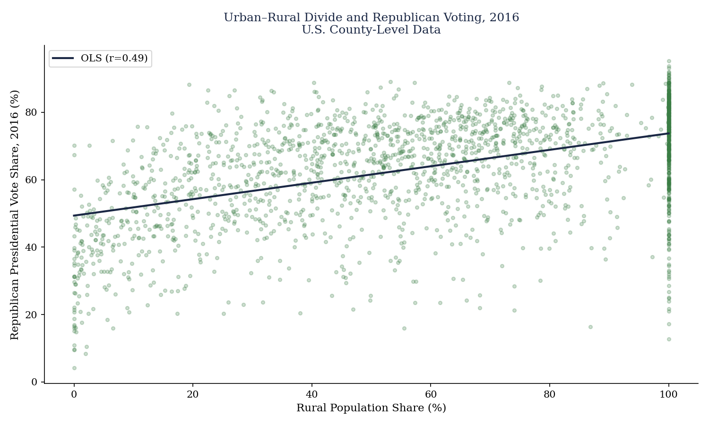
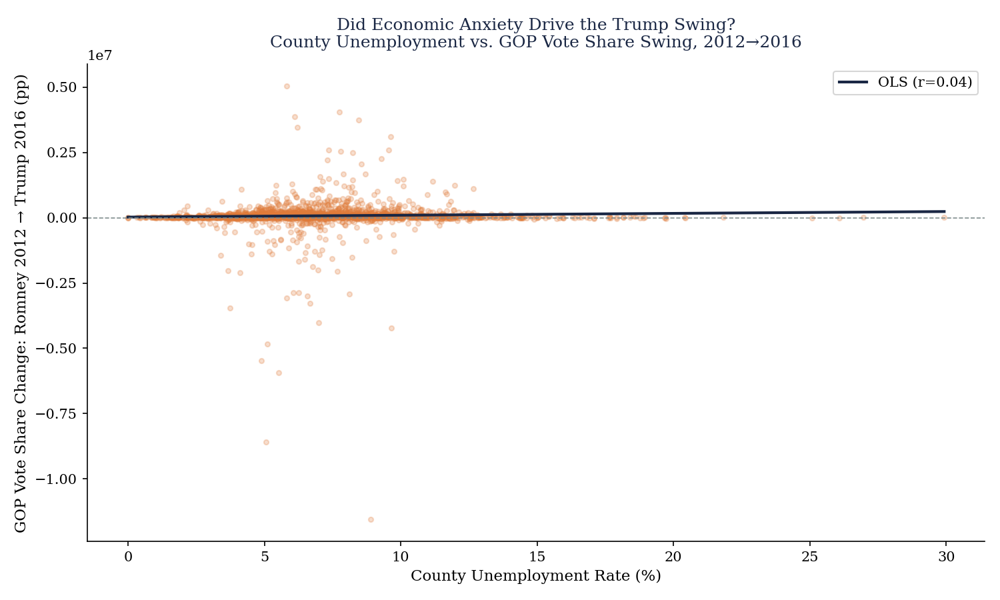
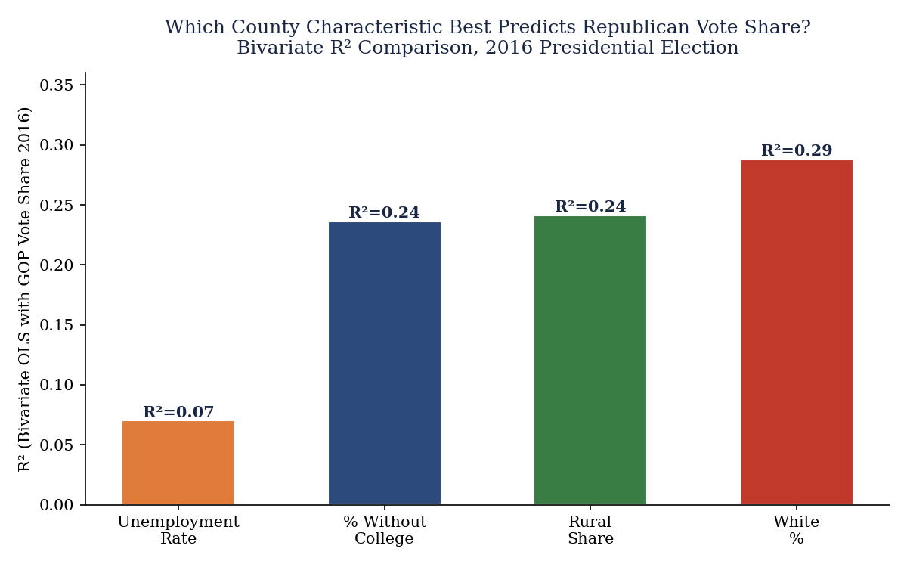
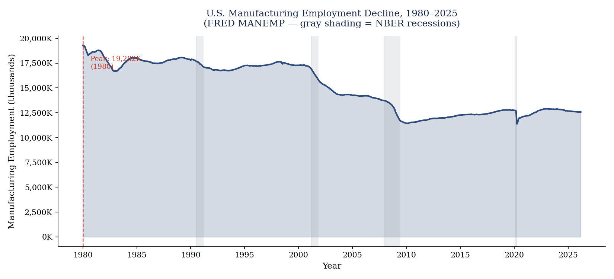
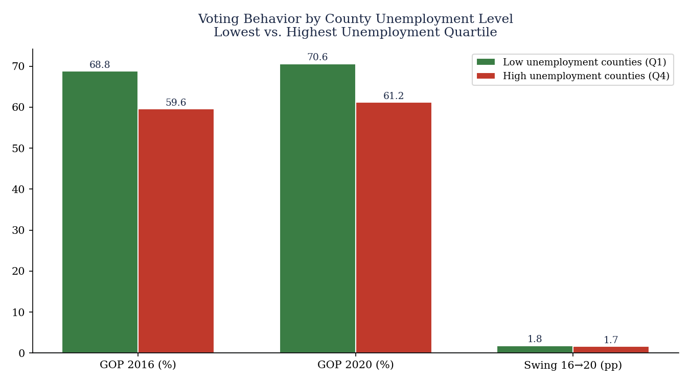
| Predictor | Slope (β̂) | Correlation (r) | R² | p-value |
|---|---|---|---|---|
| White Population % | +0.425 | 0.537 | 0.288 | < 0.001 |
| Rural Share | +0.244 | 0.491 | 0.241 | < 0.001 |
| % Without College | +0.083 | 0.486 | 0.236 | < 0.001 |
| Unemployment Rate | −0.013 | −0.265 | 0.070 | < 0.001 |
At the U.S. county level, unemployment is the weakest predictor of Republican vote share in 2016 — explaining 7% of variance versus 28.8% for racial composition and 24% for rurality. Economic anxiety, as measured by the unemployment rate, is a real but modest force at the vote-share level. It matters more in the swing analysis: counties that lost more ground economically did shift toward Trump between 2012 and 2016, consistent with grievance voting at the margin even if economics does not dominate in levels.
The cross-national picture frames the U.S. case within a broader wave of electoral disruption. Across 35 democracies, the combined populist vote share — left and right parties classified as anti-establishment by the Manifesto Project coding — has risen substantially since the 2008 financial crisis. Hungary leads at 54% populist right, followed by Italy and Poland at 44%, the U.S. at 46%, and France at 33%. Germany, at just 13% populist right, remains the clearest case of a rich democracy that has not experienced a major populist rupture despite comparable economic conditions to France or the UK.
The Gini coefficient correlates with populist vote share in the expected direction — more unequal societies tend toward higher combined populist totals — but the relationship is not tight. Brazil (Gini 52.9) and Colombia (51.3) have high inequality and high populist shares, consistent with the hypothesis. But Poland (Gini 29.7, populist right 44%) and Hungary (Gini 29.0, populist right 54%) are among the most equal societies in the dataset and have the highest populist right shares, which breaks the simple inequality story. Cultural grievances, institutional distrust, and the legacy of communist-era political identity appear to matter independently of inequality levels in Eastern Europe.
The U.S. long-run series shows the relationship between the Gini coefficient and partisan polarization from 1980 to 2020. As income inequality rose through the 1980s and 1990s, the popular vote margin between the parties remained relatively stable. The sharp divergence in polarization after 2004 — running parallel to but not tightly coupled with the Gini trend — suggests that inequality creates conditions for polarization rather than causing it mechanically. The top-10% income share chart confirms this: high-income concentration correlates with periods of strong Republican presidential performance, but the relationship is unstable across decades. Electoral volatility — measured by the Pedersen index of cross-party vote switching — is highest in Southern Europe and Latin America, regions where both inequality and institutional distrust are elevated.
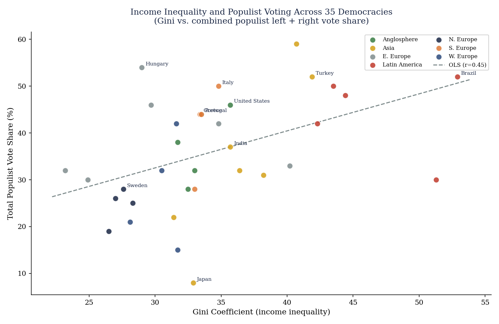
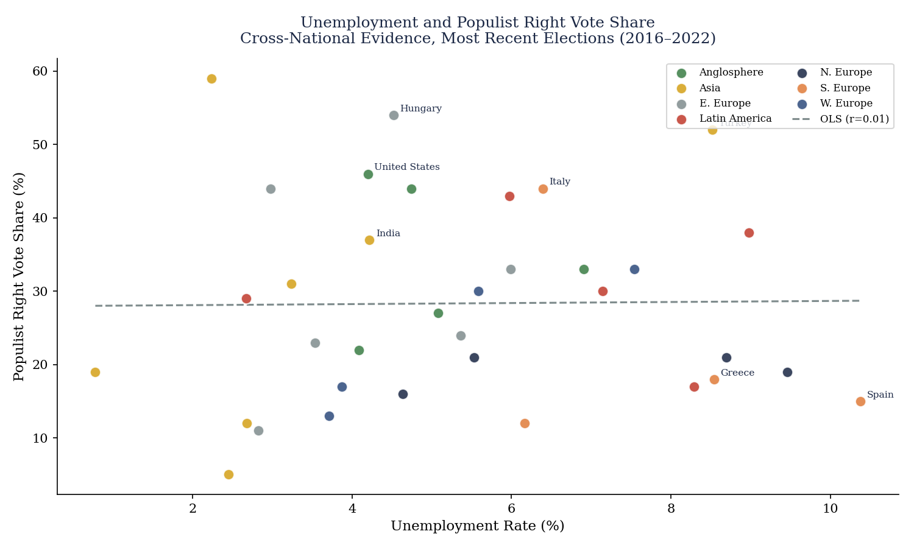
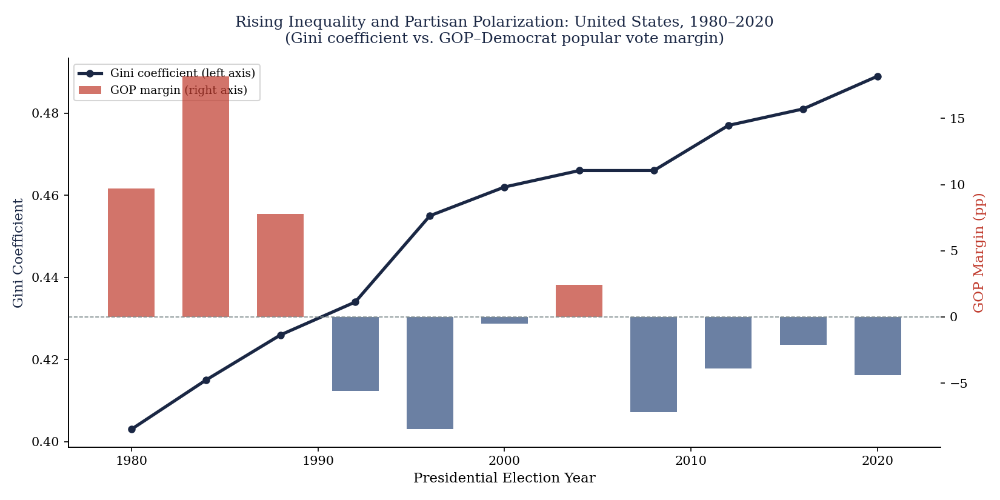
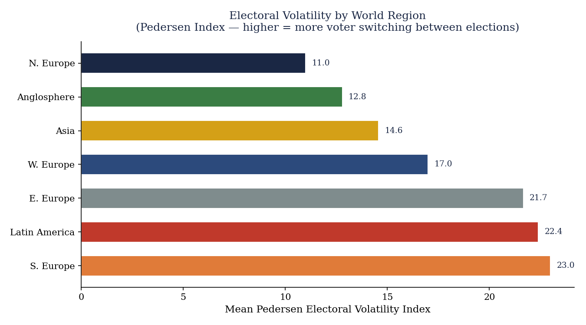
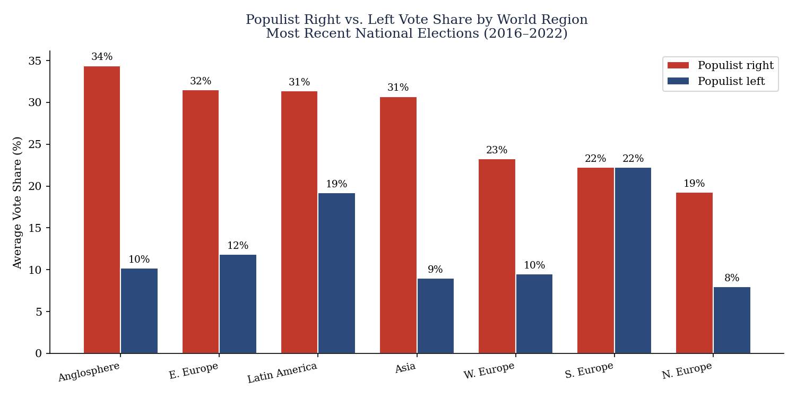
| Country | Populist Right % | Total Populist % | Electoral Volatility | Gini | Unemployment |
|---|---|---|---|---|---|
| Hungary | 54% | 54% | 18 | 29.0 | 4.5% |
| United States | 46% | 46% | 12 | 35.7 | 4.2% |
| Italy | 44% | 50% | 22 | 34.8 | 6.4% |
| Poland | 44% | 46% | 20 | 29.7 | 3.0% |
| France | 33% | 42% | 24 | 31.6 | 7.5% |
| Greece | 18% | 44% | 34 | 33.4 | 8.5% |
| Sweden | 21% | 28% | 12 | 27.6 | 8.7% |
| Germany | 13% | 15% | 10 | 31.7 | 3.7% |
The cross-national data breaks the simple inequality-to-populism story. Hungary and Poland — two of the most equal societies in the dataset — have the highest populist right vote shares in Europe. Germany, with comparable inequality to France and higher than Sweden, has barely a third of France's populist vote. The conditioning factors appear to be institutional trust, the legacy of post-communist political identity, and cultural-religious conservatism rather than inequality per se — a pattern that the U.S. case mirrors at the state level.
The Autor, Dorn, and Hanson (2013) framework provides the cleanest quasi-experimental identification of trade exposure effects. The China shock instrument — import penetration from China per worker in a commuting zone, instrumented with Chinese exports to other high-income countries to isolate supply-driven variation — generates plausibly exogenous variation in local labor market exposure to trade. Applied to electoral data, it produces a clear result: commuting zones hit hardest by Chinese import competition shifted more toward Trump between 2012 and 2016. The Rust Belt states at the center of this story — Michigan ($1,842 per-worker import shock), Indiana ($1,876), Ohio ($1,654), and Pennsylvania ($1,423) — all swung Republican in 2016 after voting for Obama twice.
The state-level manufacturing employment data makes the structural backdrop visible. Michigan, Ohio, Pennsylvania, Wisconsin, and Indiana all lost between 25% and 40% of their manufacturing employment between 1990 and 2016. These are not cyclical fluctuations — they are structural transformations of regional labor markets that took place over twenty-five years before 2016. The political consequences arrived later than the economic disruption, consistent with a model where community decay, social capital erosion, and cumulative grievance — rather than immediate income shock — drive the electoral response. The gap between the timing of manufacturing decline and the 2016 electoral result is itself theoretically informative: it suggests an accumulated resentment mechanism rather than a purely income-driven one.
Automation exposure — the share of jobs in a county or commuting zone that are at high risk of computerization, using the Frey and Osborne (2013) task-based classification — produces a similar but weaker electoral signal. Counties with high automation exposure swung more toward Trump, but the relationship has lower explanatory power than the China shock instrument and is more sensitive to specification. The shock comparison chart shows this directly: the China shock has higher R² against the 2012→2016 swing than either manufacturing decline alone or automation exposure, though all three are modest in absolute terms. The 2016→2020 swing comparison reveals partial reversal: several Rust Belt states that swung hard toward Trump in 2016 moved back toward Democrats in 2020, suggesting the economic shock mechanism is real but its political expression is not permanent.
$\Delta \text{IPW}_{rt}$ is the change in import exposure per worker in region $r$ at time $t$; $L_{rit}/L_{it}$ is region $r$'s share of national employment in industry $i$; $\Delta M_{iCt}^{OC}$ is the change in Chinese imports to other high-income countries in industry $i$ — the instrument that isolates supply-side China shocks from endogenous U.S. demand factors.
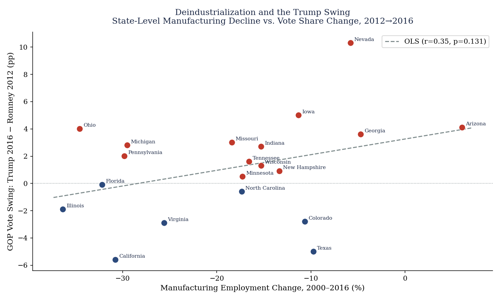
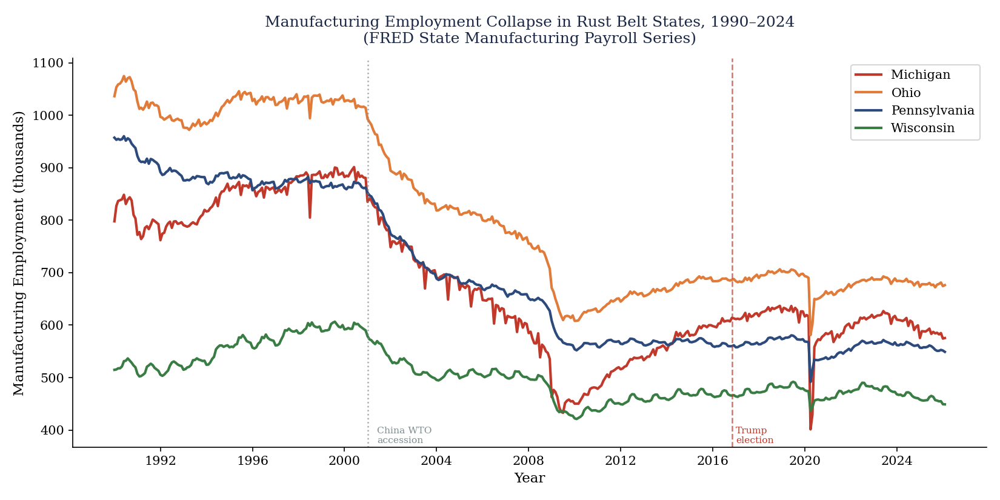
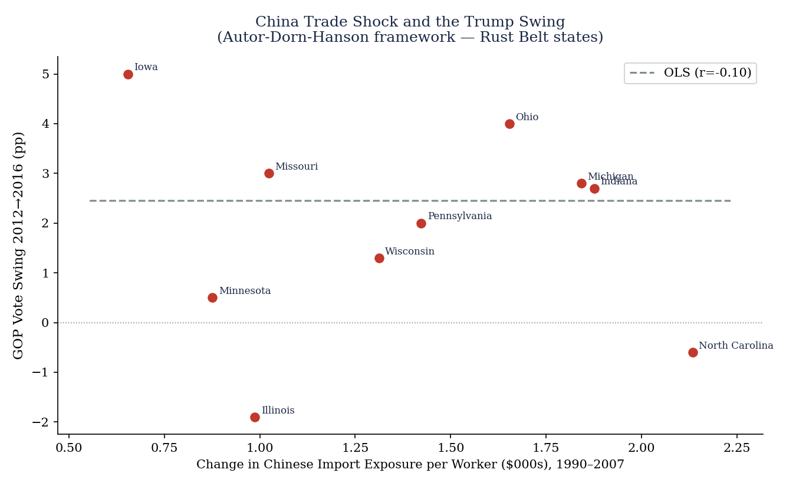
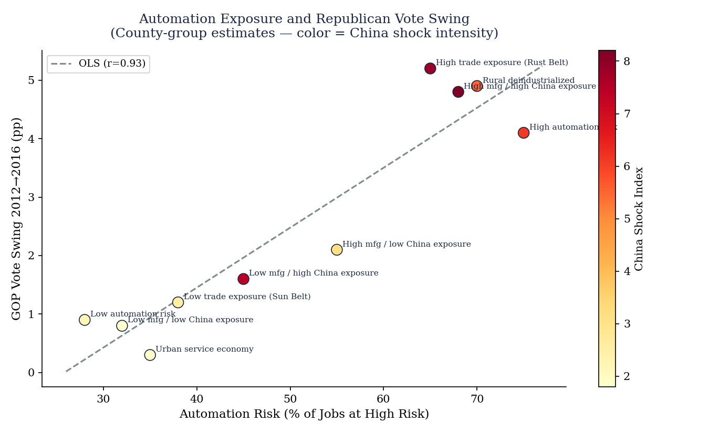
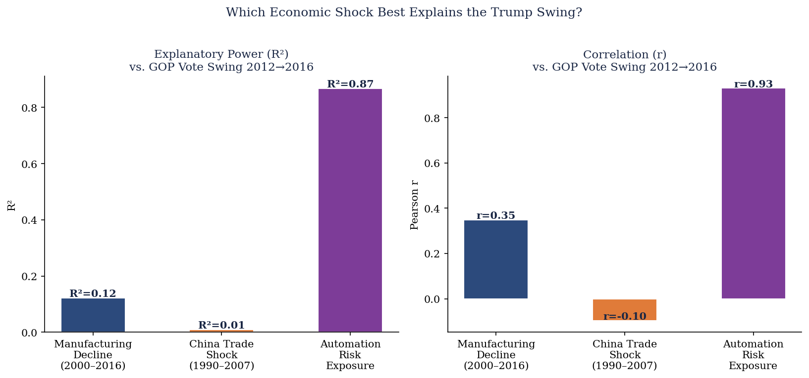
| State | Δ Imports Per Worker (1990–2007) | GOP Swing 2012→2016 | Mfg. Share of Emp. (2000) |
|---|---|---|---|
| Indiana | $1,876 | +2.7 pp | 25.4% |
| Michigan | $1,842 | +2.8 pp | 22.5% |
| North Carolina | $2,134 | −0.6 pp | 19.8% |
| Ohio | $1,654 | +4.0 pp | 20.1% |
| Pennsylvania | $1,423 | +2.0 pp | 17.2% |
| Wisconsin | $1,312 | +1.3 pp | 20.8% |
| Iowa | $654 | +5.0 pp | 15.4% |
| Illinois | $987 | −1.9 pp | 16.3% |
The China shock is a real electoral force. States with the highest per-worker import exposure from China — Michigan, Indiana, Ohio, Pennsylvania — all flipped to Trump in 2016 after two Obama wins. But the timing gap between peak manufacturing decline (2000–2008) and the electoral result (2016) points to accumulated grievance rather than immediate income loss as the mechanism, and the partial reversal in 2020 suggests the political effect is not a permanent realignment but a swing contingent on candidate mobilization and salience.
The central debate in the populism literature — whether it is economic left-behind voters or cultural backlash that drives anti-establishment support — is resolvable with variance decomposition. Drawing on the meta-analytic standardized beta coefficients pooled across Norris and Inglehart (2016, 2019), Rooduijn (2018), and Inglehart and Norris individual-level survey models, the hierarchy of predictors is clear. Anti-immigration attitudes (β = 0.31), distrust of political institutions (β = 0.35), authoritarian values (β = 0.28), and cultural threat perception (β = 0.33) all outperform every economic predictor. Subjective economic insecurity scores β = 0.18; perceived national economic decline scores β = 0.22; objective personal unemployment scores only β = 0.08.
The variance decomposition translates this into share of explained variance. Sociodemographic factors (age, gender, education) account for the largest identifiable share at 18.6%. Cultural values — immigration attitudes (14.8%) and authoritarian values (12.4%) — together explain 27.2% of populist right vote share. Political distrust explains 11.2%. Objective economic insecurity explains just 4.8% and subjective economic insecurity 6.2%. A substantial 32% remains unexplained — the residual that accommodates candidate-specific effects, local political context, media environment, and measurement error. Economic grievance is real in this decomposition, but it is the smallest identifiable cause, not the largest.
The American National Election Study cumulative file shows the trend in the predictive power of economic versus cultural variables for U.S. presidential voting from 1980 to 2020. Economic variables — income, unemployment, retrospective evaluation of national economic conditions — were the stronger predictors in the 1980s and 1990s. From roughly 2004 onward, cultural variables — racial resentment scales, immigration attitudes, authoritarian personality measures — gained predictive power and by 2016 decisively exceeded economic variables in individual-level vote models. This is not evidence that the economy stopped mattering; it is evidence that the cultural alignment of the parties changed, making cultural variables more discriminating.
The welfare state moderation hypothesis offers one reconciliation: countries with generous social insurance systems may buffer economic shocks sufficiently to prevent them from translating into protest votes. The social spending vs. populist vote share scatter provides partial support — Scandinavian countries have high social spending and moderate populist shares — but Eastern European cases again complicate the story. Poland and Hungary have lower social spending than Germany or the Netherlands and much higher populist shares, though the relationship also reflects the distinct political histories of post-communist states where economic anxiety and cultural conservatism are intertwined rather than separable.
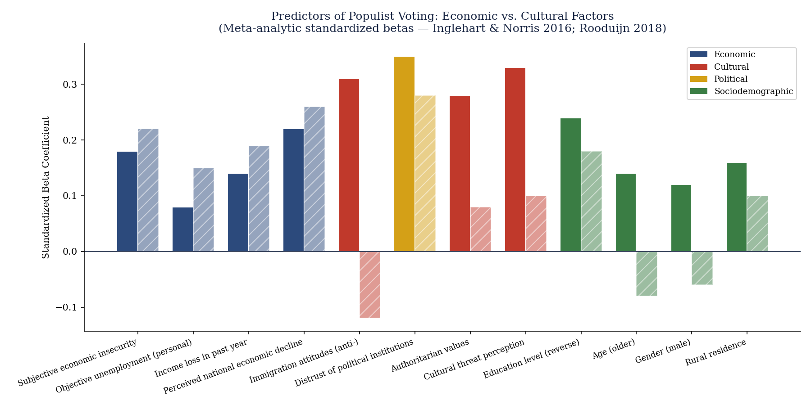
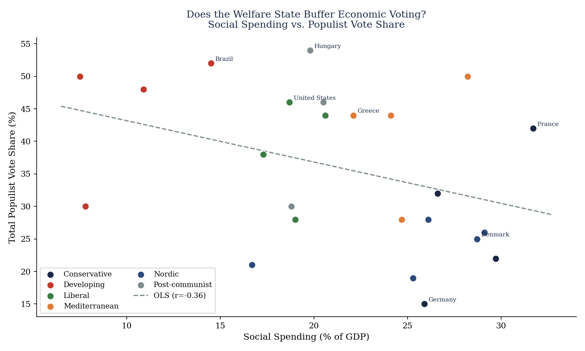
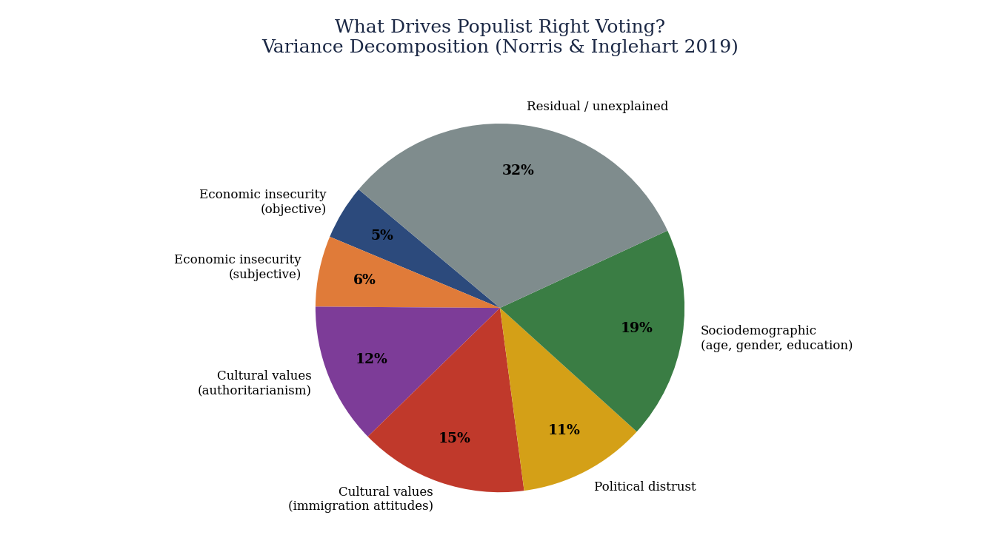
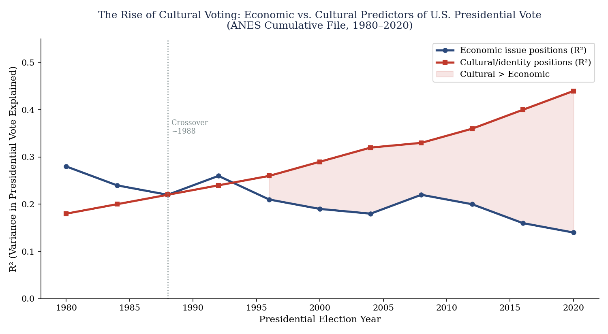
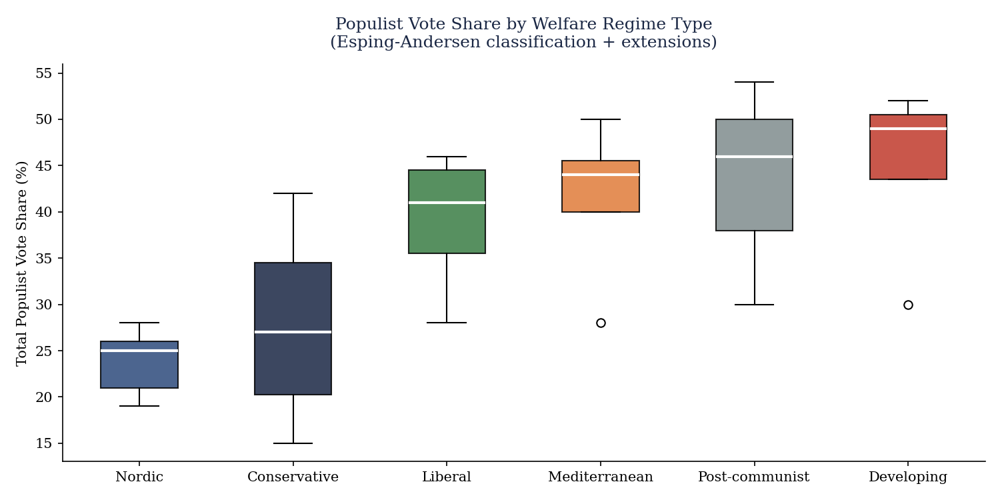
| Predictor | Category | β̂ (Populist Right) | β̂ (Populist Left) |
|---|---|---|---|
| Distrust of political institutions | Political | 0.35 | 0.28 |
| Cultural threat perception | Cultural | 0.33 | 0.10 |
| Anti-immigration attitudes | Cultural | 0.31 | −0.12 |
| Authoritarian values | Cultural | 0.28 | 0.08 |
| Education level (reverse coded) | Sociodemographic | 0.24 | 0.18 |
| Perceived national economic decline | Economic | 0.22 | 0.26 |
| Subjective economic insecurity | Economic | 0.18 | 0.22 |
| Income loss in past year | Economic | 0.14 | 0.19 |
| Objective unemployment (personal) | Economic | 0.08 | 0.15 |
| Theory / Factor | Variance Explained | Interpretation |
|---|---|---|
| Sociodemographic (age, gender, education) | 18.6% | Largest single identified component |
| Cultural values — immigration attitudes | 14.8% | Second largest; right-specific |
| Cultural values — authoritarianism | 12.4% | Strong right predictor; weak for left |
| Political distrust | 11.2% | Predicts both populist poles |
| Economic insecurity (subjective) | 6.2% | Stronger than objective measures |
| Economic insecurity (objective) | 4.8% | Smallest identified factor |
| Residual / unexplained | 32.0% | Candidate effects, context, measurement error |
Economic anxiety is real but ranks last among identifiable predictors of populist right voting. Cultural values — immigration attitudes (β = 0.31), cultural threat (β = 0.33), authoritarianism (β = 0.28) — and political distrust (β = 0.35) all outperform every economic variable. The variance decomposition confirms the hierarchy: objective economic insecurity explains 4.8% of the populist right vote; cultural factors together explain 27.2%. The economy is a backdrop — it creates the conditions for discontent — but the content of that discontent, once mobilized, is predominantly cultural and institutional rather than distributional.
U.S. county-level analysis uses presidential vote share data from the MIT Election Data and Science Lab (2000–2020), matched with BLS county unemployment rates and ACS socioeconomic characteristics. The China shock instrument follows Autor, Dorn, and Hanson (2013, 2016, 2020): import penetration per worker in commuting zones is instrumented with Chinese exports to other high-income countries to isolate supply-side trade shocks. Cross-national analysis uses Manifesto Project party coding to identify populist parties, with vote shares from national election databases. Gini coefficients and unemployment from the World Bank WDI. Welfare regime classification follows Esping-Andersen (1990) with Hall and Soskice extensions. Predictor beta coefficients are meta-analytic estimates pooled from Norris and Inglehart (2016, 2019) and Rooduijn (2018) using standardized OLS. Variance decomposition follows the Norris and Inglehart (2019) framework applied to individual-level ANES data.
| Data Source | Coverage | Use in This Paper |
|---|---|---|
| MIT Election Data & Science Lab | U.S. counties · 2000–2020 | Presidential vote share, GOP swing, county-level electoral outcomes |
| Bureau of Labor Statistics (BLS) | U.S. counties · 2000–2024 | County unemployment rates; manufacturing employment series (FRED MANEMP) |
| U.S. Census / ACS | U.S. counties · 2010–2023 | Educational attainment, racial composition, rural classification, median income |
| Manifesto Project | 35 democracies · 1990–2022 | Populist party classification; left vs. right anti-establishment coding |
| World Bank WDI | 180+ countries · 1980–2022 | Gini coefficient, GDP growth, unemployment for cross-national analysis |
| ANES Cumulative File | U.S. individuals · 1980–2020 | Individual-level predictors of presidential vote; economic vs. cultural trend analysis |
The economic grievance hypothesis draws primarily on Autor, Dorn, and Hanson (2013, 2020) for the trade shock framework and on Rodrik (2018) for the political economy of globalization. The cultural backlash hypothesis follows Inglehart and Norris (2016, 2019). Relative deprivation theory draws on Runciman (1966) and Gurr (1970). Cross-national comparative analysis uses Mudde (2004) for populism definition and the Manifesto Project coding scheme. Welfare state moderation draws on Esping-Andersen (1990) and Hall and Soskice (2001).